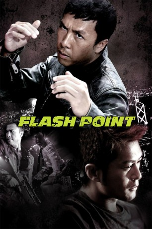

#2383 Flash Point
 
 IMDB-Wertung: 6.8 / 10
IMDB-Wertung: 6.8 / 10  Metascore: 38
Metascore: 38 
Der knallharte Inspektor Ma (Donnie Yen) arbeitet seit Jahren gemeinsam mit seinem Kollegen Wilson (Louis Koo) daran, ein vietnamesisches Verbrechersyndikat zur Strecke zu bringen. Doch als sie endlich kurz davor stehen, die Bande um den Syndikatsboss Tony (Collin Chou) dingfest machen zu können, fliegt die Tarnung des undercover operierenden Wilson auf. Bevor Tony untertaucht, verletzt er den enttarnten Wilson so schwer, dass dieser eine bleibende Gehbehinderung erleidet. Umso wichtiger ist der Teilerfolg zu werten, den die Polizisten durch die Verhaftung des führenden Bandenmitgliedes Archer Sin (Ray Lui) erringen konnten. Die sicher geglaubte Verurteilung des Schwerverbrechers rückt jedoch schnell wieder in weite Ferne, als alle Zeugen ermordet werden - alle bis auf Wilson. Ein gnadenloser Kampf um Archers Verurteilung, Tonys Verhaftung und Wilsons Sicherheit stellt Ma vor die schwere Entscheidung zwischen persönlichen Hassgefühlen und Dienstvorschriften...
Jahr: 2007
Dauer: 88 Minuten
FSK: 18
Land: Hong-Kong Studio: Mandarin Films DistributionTonspuren:
Untertitel: Deutsch,
Auflösung: 1080p (1920x816) Größe: 7342 MB
Genre: Action
Regisseur: Wilson Yip
Drehbuch: Kam-Yuen Szeto, Lik-Kei Tang
Soundtrack: Kwong Wing Chan
Darsteller:
 Donnie Yen als Ma
Donnie Yen als Ma Louis Koo als Wilson
Louis Koo als Wilson Collin Chou als Tony
Collin Chou als Tony Bingbing Fan als Judy
Bingbing Fan als Judy- Kea Wong als Herself , archive footage
- Qing Xu als Madam Lau
- Ray Lui als Archer
 Kent Cheng als Inspector Wong
Kent Cheng als Inspector Wong Xing Yu als Tiger
Xing Yu als Tiger Ben Lam als Sam
Ben Lam als Sam- Lan Law als Madam Ma
 Timmy Hung als Yang
Timmy Hung als Yang Tony Ho als Cannon
Tony Ho als Cannon- Ping Ha als Tony's Mum
- Irene Wang als Cindy
 Austin Wai als Four Eyes
Austin Wai als Four Eyes- Wai Ai als Hero
 Chi Wai Wong als Baldy
Chi Wai Wong als Baldy- Aaron Leung als Deco
- Kenji Tanigaki als Tony's Underling #1
- Kang Yu als Tony's Underling #1
- Zen Berimbau als Boxing Trainer
- Damian Green als Boxer
- Damon Howe als Boxer
- Min Yoo als Boxer
- Drafus Chow als Boxer
- Dus Luu als Boxer
- Wong Yin Keung als Cop
- Man Fan 'Fanny' Lee als Four Eyes' wife
- Sherwin Ming als Little Girl's Father
- Yûji Shimomura als Sniper
- Hung Siu als Beach swimmer
- Kin-Yung Tsang als Senior police officer
- Kimmi Man-Ching Tsui als Madam Lau
Datei: X:\FSK18-2000-2009\Flash Point (2007, FSK18, 1920x816).mkv seit 04.11.2015
Festplatte: FSK18
 Es gibt insgesamt 106 Filme in der Gruppe 'FSK18-2000-2009'
Es gibt insgesamt 106 Filme in der Gruppe 'FSK18-2000-2009'